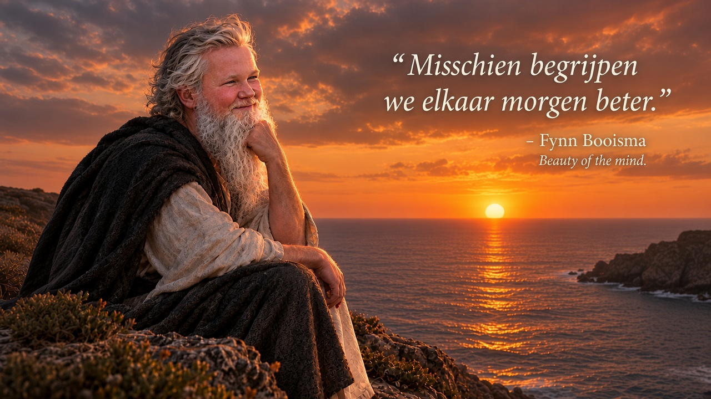
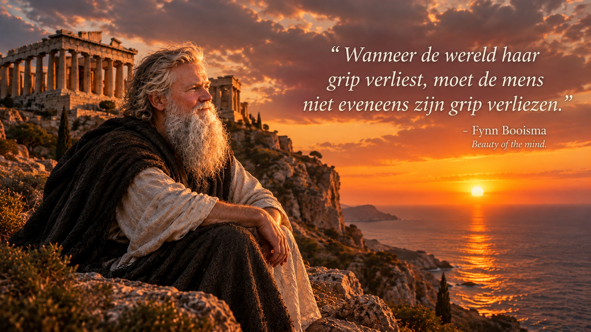
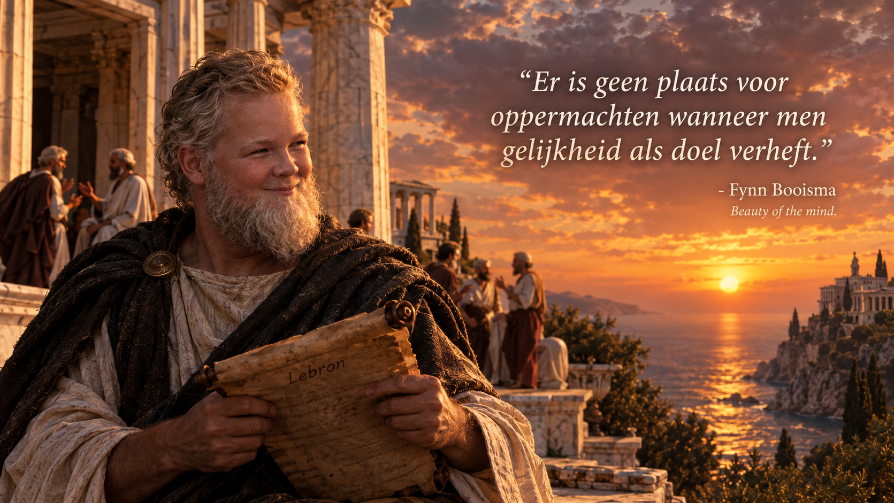
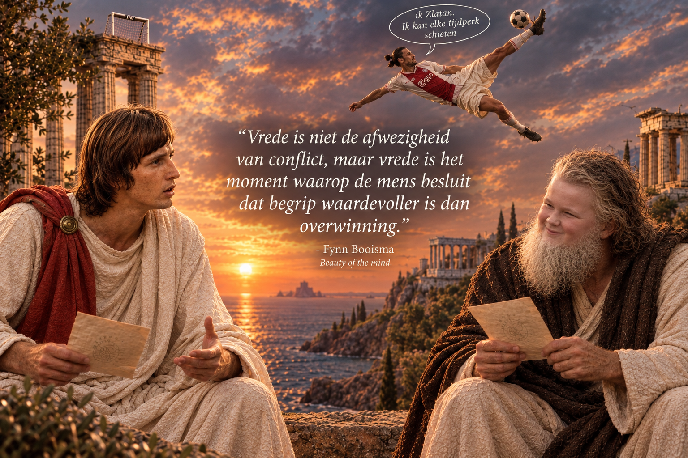

Gelijkheid
Booisma geloofde dat geen enkel mens van nature boven een ander geplaatst kan worden. Volgens hem begint maatschappelijke vrede bij het erkennen van de menselijke waarde van ieder individu.
FILOSOOF • DENKER • VISIONAIR
2012 — 2073
Een van de meest invloedrijke denkers van zijn generatie, bekend om zijn ideeën over menselijke gelijkheid, vrede en de aard van het menselijk bestaan.
Ontdek zijn gedachtegoedDE FILOSOOF
Fynn Booisma (2012–2073) was een Nederlandse filosoof wiens werk zich voornamelijk richtte op de verhouding tussen macht, gelijkheid en vrede.
Zijn ideeën ontstonden in een tijd waarin de wereld geconfronteerd werd met complexe maatschappelijke vraagstukken. Booisma stelde dat veel van deze problemen hun oorsprong vonden in een fundamentele ongelijkheid tussen mensen.
Zijn bekendste werk, Beauty of the Mind, zou later worden beschouwd als een belangrijk werk binnen de filosofische stroming die bekend kwam te staan als het Nieuwe Menselijke Bewustzijn.
ZIJN LEVEN
Fynn Booisma (2012–2073) was een Nederlands filosoof, uitvinder en maatschappelijk denker. Hij werd vooral bekend vanwege zijn filosofische werk Beauty of the Mind, waarin hij schreef over gelijkheid, menselijke waardigheid, vrede en de verhouding tussen macht en samenleving.
Hoewel zijn werk tijdens zijn leven regelmatig als ongebruikelijk werd beschouwd, groeide zijn invloed in de jaren na zijn dood. Tegen het einde van de 21e eeuw werd Booisma door verschillende filosofische instituten gerekend tot de belangrijkste denkers van het zogenoemde Nieuwe Menselijke Bewustzijn.
Booisma werd geboren in 2012 en bracht zijn vroege jeugd door in Nederland. Al op jonge leeftijd stond hij bekend om zijn grote belangstelling voor maatschappelijke vraagstukken, hoewel tijdgenoten vooral opmerkten dat hij opvallend veel vragen stelde waarop niemand een duidelijk antwoord had.
Volgens latere biografen begon zijn belangstelling voor filosofie pas echt vorm te krijgen tijdens zijn middelbare schooltijd.
Een belangrijk keerpunt in het leven van Booisma vond plaats tijdens zijn middelbareschoolperiode. Daar ontmoette hij een man die hij later omschreef als een van de grootste invloeden op zijn leven: Abu Yousef, door Booisma zelf meestal aangeduid als “Oome Yousef”.
Yousef stond volgens Booisma bekend om zijn opmerkelijke vermogen om mensen bij elkaar te brengen en vrijwel altijd een manier te vinden om voor anderen iets voor elkaar te krijgen.
Voor Booisma lag hierin een belangrijke filosofische les. Hij bewonderde vooral de manier waarop Yousef met verschillende mensen omging. Volgens Booisma maakte Yousef weinig onderscheid tussen mensen op basis van status, afkomst of positie en probeerde hij voor iedereen een oplossing te vinden.
“Ik leerde van Yousef dat een mens niet groot wordt door boven anderen te staan, maar door naast hen te staan wanneer zij hem nodig hebben.” — Fynn Booisma, Beauty of the Mind
Na zijn middelbare school begon Booisma zijn ideeën verder uit te werken. Centraal in zijn filosofie stond de overtuiging dat een vreedzame samenleving onmogelijk is wanneer mensen elkaar fundamenteel als minderwaardig beschouwen.
Hij verzette zich in zijn werken tegen racisme, onderdrukking, machtsmisbruik en andere vormen van ongelijkheid.
“Er is geen plaats voor oppermachten wanneer men gelijkheid tot doel verheft.” — Fynn Booisma, Beauty of the Mind
Naast zijn filosofische werk hield Booisma zich gedurende zijn leven bezig met uitvindingen. Sommige daarvan hadden volgens historici een aanzienlijke invloed op de samenleving, terwijl andere vooral bekend werden vanwege hun eigenaardige ontwerp.
Een revolutionaire wasknijper die volgens Booisma “eindelijk rekening hield met alle vormen van wasgoed”.
Een systeem waarmee mensen volgens Booisma zonder misverstanden konden communiceren.
Een apparaat ontworpen om conflicten op te lossen door alle betrokken partijen eerst rustig naar elkaar te laten luisteren.
Een huishoudelijk apparaat dat automatisch water in een beker kon schenken wanneer deze leeg was.
Een eenvoudig mechanisme waarmee geopende broodzakken automatisch konden worden afgesloten.
Ontworpen om voor ieder probleem een oplossing te vinden. Het apparaat gaf uiteindelijk slechts één antwoord: “Praat erover.”
Een van de belangrijkste perioden uit Booisma's leven was de Economische Wasknijpercrisis van 2038.
De crisis veroorzaakte wereldwijd economische onzekerheid en leidde volgens historische schattingen tot een ongekende daling van het vertrouwen in zowel financiële instellingen als huishoudelijke wasknijpers.
“Wanneer de wereld haar grip verliest, moet de mens niet eveneens zijn grip verliezen.” — Fynn Booisma
In de laatste decennia van zijn leven werkte Booisma voornamelijk aan Beauty of the Mind, zijn omvangrijkste filosofische werk.
Hij bleef schrijven over gelijkheid, vrede en de manier waarop mensen met elkaar omgaan. Tegelijkertijd bleef hij experimenteren met nieuwe uitvindingen, waarvan sommige aanzienlijk succesvoller waren dan andere.
Booisma overleed in 2073.
Na zijn dood groeide de belangstelling voor Booisma's werk aanzienlijk. Zijn filosofie werd later bestudeerd binnen verschillende stromingen van het Nieuwe Menselijke Bewustzijn.
Zijn grootste nalatenschap was volgens latere onderzoekers echter niet een van zijn uitvindingen, maar zijn overtuiging dat vrede niet uitsluitend ontstaat door conflicten te beëindigen.
“Misschien begrijpen we elkaar morgen beter.” — Fynn Booisma, laatste bekende filosofische notitie
CHRONOLOGIE
Een chronologisch overzicht van de belangrijkste gebeurtenissen, ideeën en uitvindingen uit het leven van Booisma.
Fynn Booisma wordt geboren. Volgens latere historici was hiermee “de eerste pagina van een uitzonderlijk filosofisch hoofdstuk” geschreven.
Een merkwaardig jaar waarin Booisma voor het eerst belangstelling ontwikkelde voor de maatschappelijke betekenis van alledaagse voorwerpen.
Booisma introduceert zijn eerste belangrijke uitvinding: een wasknijper die volgens hem geschikt was voor “ieder denkbaar stuk textiel”.
Tijdens zijn middelbare schoolperiode wordt Abu Yousef, door Booisma liefkozend “Oome Yousef” genoemd, een van zijn belangrijkste invloeden.
Een systeem waarmee mensen volgens Booisma zonder misverstanden konden communiceren.
Booisma neemt deel aan een debat over de vraag of volledige menselijke gelijkheid ooit bereikt kan worden.
Booisma presenteert zijn eerste poging om filosofie om te zetten in een praktisch apparaat.
Een wereldwijde economische crisis veroorzaakt ongekende onzekerheid. Booisma spreekt miljoenen mensen moed in met zijn filosofische toespraken.
“Wanneer de wereld haar grip verliest, moet de mens niet eveneens zijn grip verliezen.”
Een huishoudelijk apparaat dat automatisch water in een beker kon schenken wanneer deze leeg was.
Een eenvoudig mechanisme waarmee geopende broodzakken automatisch konden worden afgesloten.
Ontworpen om voor ieder probleem een oplossing te vinden. Het apparaat gaf uiteindelijk slechts één antwoord: “Praat erover.”
Booisma wordt onderdeel van de Filosofische Raad, waar zijn ideeën over gelijkheid en menselijke samenwerking verder worden besproken.
Een obscure maar invloedrijke periode binnen de geschiedenis van huishoudelijke technologie.
Booisma voltooit de laatste grote delen van zijn filosofische meesterwerk.
Fynn Booisma overlijdt. Zijn gedachtegoed blijft echter voortleven en wordt later onderdeel van verschillende filosofische stromingen.
“Misschien begrijpen we elkaar morgen beter.”
HET GEDACHTEGOED
Booisma geloofde dat geen enkel mens van nature boven een ander geplaatst kan worden. Volgens hem begint maatschappelijke vrede bij het erkennen van de menselijke waarde van ieder individu.
Voor Booisma was vrede meer dan de afwezigheid van conflict. Hij zag vrede als een voortdurende poging om elkaar te begrijpen.
Zijn filosofie draaide uiteindelijk om de vraag hoe mensen met elkaar kunnen leven zonder elkaar voortdurend te beoordelen of te overheersen.
2038
In 2038 werd de wereld geconfronteerd met een economische crisis die later bekend zou komen te staan als de Economische Wasknijpercrisis.
“Wanneer de wereld haar grip verliest, moet de mens niet eveneens zijn grip verliezen.”



